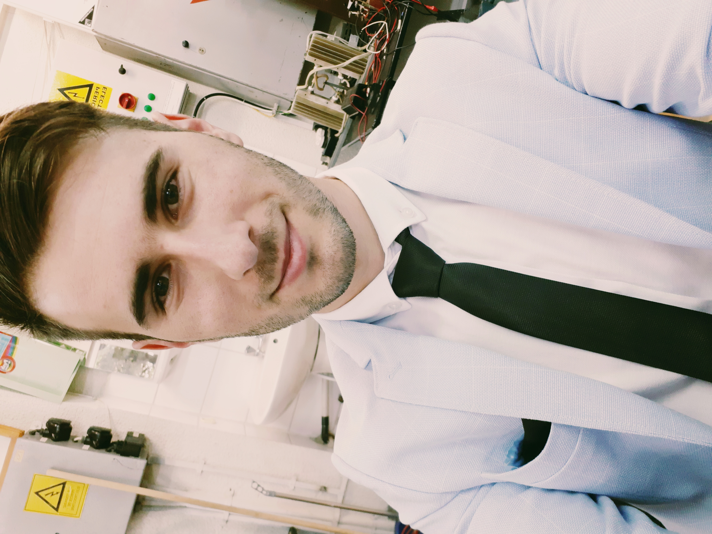

Mazarache, Daniel

Summary
Young Hardware Engineer, eager to learn and develop as much as possible.
To eliminate the confusions, programming is one of my passions.
Education
- 2019-2021 "Stefan cel Mare" University of Suceava - Master degree in Advanced Techniques in Machines and Electrical Actuators
- Most important project: Final Project - Control Signaling and Monitoring of Industrial Processes using Decentralized Systems.
- Obtained title: Master in Advanced Techniques in Machines and Electrical Actuators.
- 2015-2019 "Stefan cel mare" University of Suceava - Bachelors degree in Electrical Systems
- Most important project: Final Project - Study of the control of S210 converters with the programmable automaton.
- Obtained title: Electrical Engineer.
- 2011-2015 "Dimitrie Cantemir" Economical College - Accountability
- Most important project: Final Project - Types of insurances contracted by NN Insurances.
- Obtained title: Economical Activities Technician.
Work Experience
- 2021-present Embeded Software System Designer at Continental Automotives Romania
Responsabilities:
- Create circuits, perform worst case calculations and simulations for different purposes.
- Circuits mentenance and components update in case of unavailability.
- Plan ciruit's development and validation tests.
- Create and update tests specifications.
- Create project release documentation
- Participate in side activities in order to be active in company growth.
Skills
- Ownership skills
- Communication skills
- Planning skills
- Team and individual work skills
- Technical thinking skills
- Analithycal thinking skills
Awards and Certificates
English B1+ certificate
Other job specifica trainings certificates.
Other interesting things